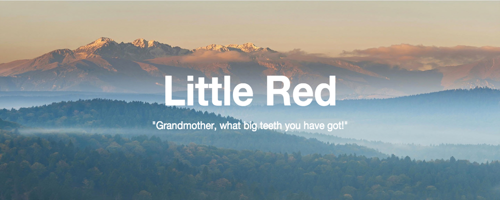

- 

Little Red Riding Hood has been challenged on the basis of two aspects; alcohol and violence.
In the original version of Little Red Riding Hood, created by Charles Perrault, both Red Riding Hood and her Grandmother die. The Grimm Brothers went on to revise the ending and added the Woodsman at the end.
However, the 1989 Houghton-Mifflin Caldecott Honor winning version became the source of much controversy. In Empire, California in 1990, the school board raised complaints over a bottle of wine Red was carrying to her grandmother in the book's illustrations.
Again, in Clay County, Florida in 1990, parents of 5th & 6th grade children challenged the fairy tale because of the wine because they feared it would encourage drinking.
In '91 a Bradford County, a Florida teacher complained that the wolf's actions were too violent.
I’m with the camp out there that opposes books being banned for any reason. I believe that if you’re not OK with your children reading a certain book then that’s up to you but parents shouldn’t be trying to create restrictions for kids other than their own.
That being said, I strongly disagree with the reasons why Little Red Riding Hood was once a banned book. Let’s breakdown the arguments:

Alcohol: First, to a child there’s nothing suggestive about a bottle containing some liquids. Children who’ve not yet been exposed to wine would not think twice about a brief image in the story. These parents are too closely analyzing something that the average child would never pickup on. I know this from experience because I read the fairytale as a child myself but it wasn’t until recently researching the controversy behind it that this aspect of the wine was brought to my attention.
To paraphrase… “Once upon a time, people drank nothing but wine and beer because water was often unsafe. Jesus took perfectly healthy water and turned it into wine. People drink wine in communion, and wine is openly for sale at the grocery store. People in movies & television have wine at dinner, there are wine lists sitting on the table at restaurants and doctors often publicly tout the benefits of red wine. Did I mention that the Bible says ’drink wine, it's good for your stomachs?’ Yet, the depiction of a fairy tale Grandmother drinking wine is perceived as a plot to turn kids into alcoholics. Whoever heard of a Grandmother who was under 21?” - Dangerous Pages
Violence: Now the aspect of violence is one I can see someone mounting an argument against. But let’s revisit the argument: “The wolf’s actions were too violent.” When have we ever considered the actions of wild animals to be non-violent. It should be universal knowledge that wolves eat can and will eat humans if we’re being honest. So I don’t see this fairy tale as being anything other than holding true to nature.
Two common interpretations of Little Red Riding Hood.
Ritual/Sexuality:
The fairy tale has been interpreted as a ritual in which little red riding hood experiences puberty. There are several sexual references including LRRH striping down and getting into bed with the deceiving wolf. The girl, leaving home, enters a liminal state and by going through the acts of the tale, is transformed into an adult woman by the act of coming out of the wolf's belly. In addition, “The heroine’s red cap is symbolic of sexuality and the wolf’s literal consummation of Little Red Riding Hood has been considered a parallel to the girl’s sexual consumption by a male” (interpretations).
Rebirth:
The fairy tale has also been interpreted as a rebirth. The image of the huntsman cutting open the wolf as LRC jumps out is interpreted as a reawakening of the girl who was tricked by the wolf. She has been reborn as a new person and subsequently has learned her lesson.